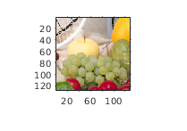
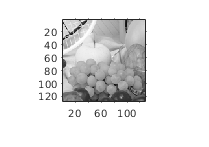
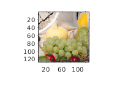
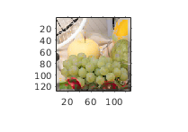

Contents
function [] = knn_main(directory, gray_image_path)
Constants/Parameters
rng(1);
directory = './images/fruits';
gray_image_path = './gray_images/gr_fruits.png';
random_samples = 5000;
max_images = 5;
H = 128;
W = 128;
edge_length = 11;
num_neighbors = 3;
feature_length = edge_length^2 + 128*3;
training_images = zeros(max_images,H,W,3);
num_images = 0;
Reading all files in the directory and storing them for training
tic;
Files=dir(directory);
for k=1:length(Files)
if(strcmp(Files(k).name(1),'.') || strcmp(Files(k).name,'..'))
continue;
end
num_images = num_images + 1;
I1 = imread(strcat(directory,'/',Files(k).name));
I1 = imresize(I1, [H W]);
disp(['Training image ', num2str(k-2)]);
figure; imshow(I1);
snapnow;
training_images(num_images,:,:,:) = rgb2lab(I1);
end
L(:,:,:) = training_images(:,:,:,1);
fprintf('Images read \n');
toc;
Training image 1

Images read
Elapsed time is 0.441934 seconds.
Selection of random pixels for each image and extraction of features
tic;
feature_pixels = zeros(random_samples, 2);
features = zeros(num_images*random_samples, feature_length);
values = zeros(num_images*random_samples, 3);
for k=1:num_images
feature_pixels(:, 1) = randi([1, H], [random_samples, 1]);
feature_pixels(:, 2) = randi([1, W], [random_samples, 1]);
feature_image = squeeze(L(k,:,:));
features((k-1)*random_samples+1:k*random_samples, :) = extract_feats(feature_image, feature_pixels, edge_length);
for i=1:random_samples
values((k-1)*random_samples+i, :) = training_images(k, feature_pixels(i, 1), feature_pixels(i, 2), :);
end
end
fprintf('Feature extraction done \n');
toc;
Feature extraction done
Elapsed time is 0.182723 seconds.
Prediction
grey = imread(gray_image_path);
grey = imresize(grey, [H W]);
disp('Input grayscale image');
figure; imshow(grey);
snapnow;
grey_lab = rgb2lab(repmat(grey, [1 1 3]));
L_test = grey_lab(:, :, 1);
all_pixels = zeros(H*W, 2);
for i=1:H
for j=1:W
all_pixels((j-1)*H + i, :) = [i j];
end
end
features_grey = extract_feats(L_test, all_pixels, edge_length);
[knn_idx, dist] = knnsearch(features, features_grey, 'K', num_neighbors);
Input grayscale image

Warning: Converting input data
to single.
Conversion to RGB
res_best = zeros(H, W, 3);
res_avg = zeros(H, W, 3);
for i=1:H
for j=1:W
res_best(i,j,1) = L_test(i,j);
res_avg(i,j,1) = L_test(i,j);
res_best(i,j, 2:3) = values(knn_idx((j-1)*H + i, 1), 2:3);
if(dist((j-1)*H+i, 1) < 1e-3)
res_avg(i, j, 2:3) = values(knn_idx((j-1)*H + i, 1), 2:3);
else
res_avg(i, j, 2:3) = sum(values(knn_idx((j-1)*H+i, :), 2:3)./dist((j-1)*H+i, :)')./sum(1./dist((j-1)*H+i,:));
end
end
end
disp('Best neighbor colorization');
figure; imshow(lab2rgb(res_best));
snapnow;
disp('Averaged neighbor colorization');
figure; imshow(lab2rgb(res_avg));
snapnow;
Best neighbor colorization

Averaged neighbor colorization

end